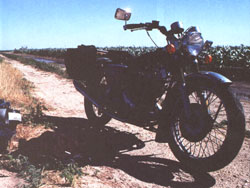
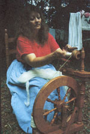
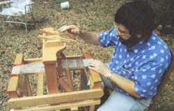
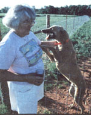
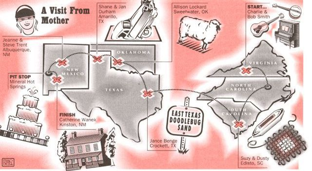
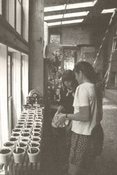
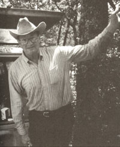
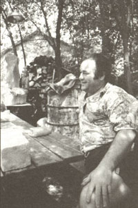
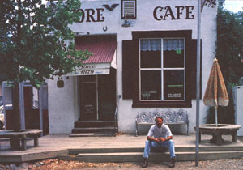

GETTIN' ROUND
MOTHER magic is alive and well-from Smithfield, Virginia,
to the Black Range of New Mexico and beyond.
SINCE THE FIRST days of this magazine, when MOTHER was little more than a traveling billboard filled with practical information for those moving back to the land, its readers have always seemed more like an extended family than mere subscribers. Readers write articles, pass along tips, and voice their constructive criticism as the publication evolves. For many readers, the magazine has been a vital part of their lives for over 20 years. Who of us hasn't cruised through a garage sale and discovered gold in the form of a stack of old issues from the early 1970s?
So it wasn't too difficult to convince the magazine staff that a family reunion was long overdue. It would take the form of a cross-country motorcycle trip on a recycled 1972 Norton Commando-a trusty if temperamental British bike that I've been rebuilding for the last few years.
We invited readers who wanted to take part to write in, and we were overwhelmed by the response. Their stories spanned the range of MOTHER interests, from bartering to pole-barn construction, and I only regret that I couldn't visit everyone who wrote us. Many thanks to all those who extended an invitation and especially to the friends and families whose gracious hospitality and interesting stories made the long days on the road worthwhile.
On Memorial Day I rolled the Norton out of the barn as fat drops of rain began to pelt my family's farm in Eastern North Carolina. I jumped on the kick start, heard the low, throaty rumble that distinguishes these bikes, eased out the clutch, and started down the gravel path to the highway to begin this odyssey. My simple goal was a down-home country visit with a few of the people who make this magazine what it is.
This is really their story.
FOOD & LODGING: The Smiths call their home a lodge-not to attract paying tourists but as invitations to friends and relatives who travel to Virginia.
The road to Charlie and Barb Smith's house is one of those classic, one-lane, unmarked strips of asphalt that meanders past the tobacco and peanut fields of southern Virginia-almost an invitation to get lost. After wandering around in the vicinity for a while, I spot a small wooden sign directing me into the woods and down a tree-lined dirt path toward the Comet Lodge, a two-story wood-frame structure nestled beneath tall pines on the edge of Comet Creek.
Charlie and Barb step out onto the front porch to greet me and I am soon enveloped by their charm. They call their home a lodge, not to attract tourists but as an invitation to friends and relatives who have traveled here from as far away as England.
"It had always been my dream to build a log home," says Charlie, "but when we started looking into it and everything involved, the cost almost doubled." So he took the plans for a 1,680-square-foot log structure, redesigned them to suit his needs, and together with a neighbor built the lodge using conventional stick-frame construction. They cut just enough trees for the house and driveway, so it feels as much a part of the forest as in it.
The Rines: Suzy brought out her old maple spinning wheel to demonstrate her craft. She told me that while she enjoys weaving, she finds spinning more relaxing.
They give me a quick tour and I notice a pampered upright piano in the corner and a hammer dulcimer displayed prominently nearby. Then Charlie opens the door to his shop. When the lights flicker on, an enormous, silver-blue tarpon leaps from one wall, while a brace of mallards, with wings locked in time, descends from another. Dozens of other animals-bass, deer, and quail-adorn the walls or lie on the workbench in various stages of completion, for Charlie is a part-time taxidermist.
Before moving to Virginia he spent 20 years at the Michigan State Museum of Natural History, where he learned his trade from a student of Carl Akeley, the father of modern taxidermy. Charlie eventually became curator at the museum. When he moved, he became director of three museums on the nearby Hampton Peninsula, focusing on local history, native cultures, and economic development in the region.
We walk outside and head down a path they've cleared that hugs the edge of Comet Swamp, accompanied by two pet goslings and an orphaned wood duck that follow close at Charlie's heels. Barbara, an avid herbalist, points out lady's slippers and partridgeberry. Trained in archaeology, she helped unearth several early Native American villages in the area. She met Charlie through the local museum.
That evening, Barb cooks an elaborate turkey dinner and we are joined by Joan, a friend of theirs from the museum. We spend the evening as one might have spent it 100 years ago, telling tales and making music. Charlie breaks out a banjo and runs through a number of traditional bluegrass songs. Barb moves to the upright piano and plays a lively Scott Joplin rag. Joan reads a moving short story she has written. I even jump in, accompanying Charlie on the guitar to "Way Downtown," a favorite bluegrass standard. Charlie sings the lead as Barb, a member oft he Virginia Choral Society, adds perfect harmony. We play late into the night, the notes blending softly in the warm Virginia air.
The next day I bid them farewell and turn back south with the refrains of the evening still ringing in my head.
The Norton strikes its now-familiar note, snorting loudly as it climbs the high bridge that is the artery between the low-country South Carolina mainland and Edisto Island. Already I've been rained on twice today-blinding, traffic-stopping rain. But the dark thunderheads have pulled offshore and a soft, afternoon light envelops the marshes and tidal creeks.
This is the great appeal of riding-one no longer has to view the land as an observer looking out the protective frame of a car window. A rider is buffeted by wind, pelted by rain, and warmed by the sun as an active part of the environment. I think about this as the salty smells of the marsh rise to greet me. I finally kill the engine outside of a small house at the end of a sandy path, and Suzy Rine laughs as I pour a cup of water from each boot.
Dressed in denim shorts and a T-shirt, she is relaxing after four days of weaving demonstrations at the Spoleto Festival, Charleston's annual ode to Italy. She shoves a tall pottery mug of iced tea in my hand and shows me around the studio/home.
In the open living area, two looms and a spinning wheel sit ready for use. A large skein of hand-dyed wool lies in the kitchen sink, while various weaving's provide flashes of color, including bright rag rugs, placemats, and wall hangings. She enters a room housing an enormous loom from Canada and returns with a five-gallon bucket.
"Close your eyes," she says. I comply. "Now stick your hand in the bucket." When I do, I sense more than feel something so soft and silky it is like trying to grasp a cloud. "Angora," Suzy explains. "It's from Sheba, my rabbit. That's about six month's worth of grooming."
Soon Suzy's husband, Dusty, drives up the path and takes a close look at the Norton. Although he has worked for a diesel manufacturer for nearly 20 years, he has the heart of a wanderer and a weaver. In the early 1970s, he and Suzy crisscrossed the Midwest on a vintage BMW motorcycle. It was during this phase of their lives that they discovered MOTHER.
"When we first stared reading it, we were living in a log cabin on a cliff overlooking the Muskatatuck River in Southern Indiana," says Suzy. "I remember seeing something about someone who spun their dog's hair."
"I got interested in wood-burning stoves," Dusty adds. "But also in alternative things-how to get by with four tires and a head of cabbage for four months. We had a wood stove in the cabin and a fireplace made of old tombstones. We learned how to chink from the magazine, and rechinked the cabin ourselves." After several moves, they settled on Edisto in 1991.
The Rine's discovered MOTHER on a motorcycle trip of their own: "We learned how to chink from the magazine, and rechinked our cabin ourselves."
Suzy brings out a maple spinning wheel to demonstrate her craft. Although she has been a weaver for more than a dozen years, lately she has become more interested in spinning. "Spinning is more time consuming, but you get the satisfaction of knowing you've taken it from the animal to the finished product," she says. "If I'm tired or aggravated, I can sit down and start spinning and it is totally relaxing. Weaving is more like work."
Dusty, who has a mechanical background, started weaving six months ago and has been bitten by the bug. "I feel a great sense of accomplishment out of it," he says. "You get to see a project through from start to finish. And when you're done you have a usable product. It makes me feel good when somebody oohs and ahhs over it." In a few years, the couple hopes to support themselves entirely by their weaving.
"I'd just like to see people more accepting of other lifestyles," Suzy told me as I was getting ready to leave. "We can no longer be a throwaway society. People should look around themselves and be observant and know what is going down."
Suzy's words stay with me as I head back over the bridge, watching the tidal creeks wind through the green marsh like the dark threads in one of her weavings.
"We're just simple country folks," says Janie Benge, her friendly Texas twang ringing through the pay phone receiver at the Crockett, Texas, courthouse. "But come on out, we'll be right here." A dozen miles later, the last four on a washboard red clay road, I find their place. It consists of 13 acres of "East Texas doodlebug sand," according to her husband Grover, a tall, lanky Texan, who extends an enormous, calloused hand as I climb off the bike.
The land slopes gently through pines and live oaks, with a few cottonwoods down by the creek. Purple wildflowers dot the grass, along with the occasional iris. Grover and Janie bought the property in 1982 to escape the growing pollution and industrial development near Lake Jackson on the Gulf Coast, where Grover worked at a Dow Chemical plant for 27 years.
"When I was a little girl, you could go out head-high in the Gulf and see your feet," says Janie, a former emergency room nurse. "The water was either azure blue or emerald green. You know how pretty Hawaii is? That is how Freeport was when I was a little girl." The image brings to mind a swim I took in the Gulf a week earlier that seemed as if I was backstroking in a bowl of French onion soup.
When they first began coming up to Crockett to work on the property, they stayed in an aged, blue Volkswagon van. "We had a little two-burner wood stove and a double box-spring mattress," Janie recalls with a smile. "One citronella candle would keep us warm all night. It was sort of like camping out, but it was enough."
They had been reading M OTHER since the late 1970s and in 1983 made a road trip to the Eco-Village in North Carolina to attend a seminar on post-and-beam construction. Although the design was not exactly what they were looking for, the seminar inspired them to begin their own house, and the following year, Grover quit his job at Dow and moved to the property to start work.
He began raising the barn using almost entirely recycled material. Many of the joists came from huge packing crates used to ship German compressors to an oxygen plant where his son worked. Together they hand-ripped the boards to get suitable widths.
Janie's dream was to use the place as a headquarters where they could spend the winter while working in various national parks during the summer. Everything was going according to plan. They had the barn dried in and furnished with a few essentials and were sleeping in the loft. A neighbor taught Janie how to witch water, and using a cut peach-tree twig, she located their well and estimated its depth to within two feet. Since then, she's witched five other wells for neighbors. "I didn't believe that business until I saw her do it," Grover says, shaking his head and smiling. They planted fruit trees and started a compost pile. Janie bought a cast-iron and soapstone wood stove through the magazine as well as a four-burner Julia cook stove. For years these stoves were the primary source of heat, hot water, and home-cooked meals in the barn, which was becoming more and more like a primary residence. Grover eventually added three more rooms to the structure, while Janie's chocolate pies were becoming renowned throughout their small community.
They had even lined up a job in Yellowstone National Park one summer when tragedy struck. One of their grandsons was diagnosed with leukemia and everything was put on hold. Grover went back to work in Freeport to help with the medical bills while Janie helped nurse the child. Tragically, the boy never recovered.
Although time has passed, they still feel the loss keenly. Janie spends much of her time reading, quilting, and cross-stitching. She's currently working on a cross-stitch of Van Gogh's irises, her favorite flower. But the house is rarely without children. The remaining grandchildren visit often, and the four young children of a friend and neighbor have adopted Janie and Grover. "They'd rather throw a sleeping bag on the floor here than sleep in their own beds," Janie says. Even the chocolate pies have begun to resurface.
We visit a bit longer and then I head out to the Norton to take my leave. As they say goodbye, Janie adds, "You know there will always be folks interested in simple country living." I agree wholeheartedly.
"Sweetwater? Sure. Just take old Route 66 to 152 west, about 20 miles," says a waitress in a diner in Sayre, Oklahoma. "But be sure not to blink."
"Why is that?"
"You might just miss it."
I thank her, pay the tab, and head out to the road Steinbeck made famous in The Grapes of Wrath. It is a four-laner now, overrun by I-40. But outside the small towns that dot the highway corridor, southern Oklahoma rolls out in the same patchwork of treeless grasslands and fields that the loads might have seen on their trek to California.
In the midst of this ocean of grass, on the corner of a gravel section of road, I find Allison Lockard walking through her lush tangle of a garden enclosed by a weathered green picket fence. Yarrow, coreopsis, and lavender grow almost interspersed with rhubarb, tomatoes, and cabbages in one corner, while thyme, marjoram, chives, and parsley compete with asparagus and wild onion in another.
"My neighbors call this the toy farm," Allison says of her five acres. "They come and look over the fence or they'll step in the deep beds and sink up to their knees. My neighbor down the road says I've got the funniest garden she has ever seen."
NEW MEXICO OR BUST:Catherine Wanek lives in a New Mexico ghost town. Her role as straw-bale advocate seems to be a far cry from her previous job as an assistant director for Hollywood films.
But Allison's garden is not the only thing making neighbors chuckle or that has won her their respect. Once she fenced out wandering cows from her pastures, lush native grasses began to return. She's used no chemicals since she moved to the farm a decade ago and has noticed elm trees beginning to grow on the place. Songbirds also seem to have made it their haven.
Her neighbors told her it was no use raising chickens because of the coyotes, but thanks to a good farm dog and a solar heated chicken house, a dozen or so black and gray-flecked "Domineckers" and oyster whites scratch contentedly in their coop. Besides contributing fresh eggs, the chickens add to the garden compost. She has even built a long, dome-shaped pen for them that fits over the deep beds.
Allison, a family therapist, came to Oklahoma from California during the oil boom of the early 1980s, when people were flooding in to work the oil fields and there was no mental-health care west of Oklahoma City.
"The rural therapist is like the old family practitioner," Allison says. "I make house calls, people stop by here. I've treated generations of families. Honest to God, I've even gotten chickens for my services."
When she first arrived, there were no rentals available. Beds were being rented in shifts. She was sleeping in a sleeping bag at a coworker's home when she found the renovated four-room schoolhouse that she eventually bought. A subscriber to MOTHER since 1971, she had always dreamed of living self-sufficiently on a five-acre farm.
Not surprisingly, she has a number of enterprises under way. A small flock of Corriedale sheep grazes behind the house. From these she hopes to produce raw wool for handspinners and chemical-free lambs for the local meat market.
"I learned all this from books," says Allison. "I love these sentences that say: `When the lambs get to be 100 pounds, take them to the butcher.' They don't tell you how to convince the lambs to go into the trailer. And I'm sure my neighbors got a real kick watching me chase lambs around the pasture."
We walk around the sheep pasture toward the sound of barking dogs and Allison's newest bootstrapping venture: racing greyhounds. Oklahoma has a long tradition of raising dogs for the track, and with the help of a friend in the business, Allison built the long exercise pens and roomy whelping parlors necessary for breeding the graceful hounds. She started her breeding program in July of 1993 and now has seven adults, eight puppies, and another litter due in July. Her first dogs will go to the trainer this summer.
"Few people understand what I'm trying to do here," Allison says, as the setting sun ignites the sky behind the schoolhouse. "My neighbors don't understand. My friends in California don't understand. But the people who read MOTHER-them that's doin'-they understand."
Not far from the Cadillac Ranch, where an eccentric cattleman buried a few vintage Caddies with their tail fins toward the stars, Shane and Jan Durham built a dream of their own. It's a two-story structure nestled in a 10-acre draw carved from the flat panhandle plateau. There is also a guest house, an elaborate well house, shop, barn, garden, and two more garages under construction. All this they built over the last five years, during one of the worst recessions in Texas history.
"We were going to build a log home," says Shane, a wiry, energetic, 27-year-old, "but we had a friend that built one and the logs started drying out and warping. Then we were going to build with bare logs until we spent a day trying to take the bark off.
"We were going to build a dome house, but I heard that some of them leaked and every cut you made was at an angle. I bet I drew 100 different house plans. Finally I tried to make it as simple as possible, and this is what we came up with."
The end result is an elaborate 1,764-square-foot pole-barn house trimmed out on the inside with stained pine hauled from a mill in Gulf, North Carolina. They and their family and friends did everything except lay the kitchen tile and carpet. Even Shane's 70-year old grandfather-who had built his own house decades before-pitched in, teaching him how to frame in the pole structure.
"You start looking around the country at these old aban doned farms," Shane says. "On most of them, the barn is still standing and the farm house is falling down." The couple had a little money saved from when Shane worked on big industrial jobs across the state, but a few years ago he took a job driv ing a Coke truck, which gave him more time to work on the house. "It really doesn't take a lot of money, just a lot of time," he says. "We spent $400 a month and went pay check to paycheck." It took him two years to finish the house and he estimates the fi nal cost at about $24,000.
Jan, who works part-time as a legal secretary, spent most of her time taking care of their three children, Jason, Tiffany, and James, but they all pitched in painting, sanding, and picking up rocks from a neighboring quarry for a rock wall. Last year was the first harvest from their garden, and Jan canned some 300 pints of peas, green beans, squash, and pickles.
We take a quick walk around the place and Tiffany, 11, and James, 10, show me the rock outcroppings above the house, which look like a giant saddle. The rise protects the house from the hard winds that often blow across the panhandle in winter. We walk over to the hog pen at the top of the hill, where Shane entices an enormous sow from its sheltered sty and it waddles out to a bucket of slop accompanied by squeals of delight from the kids.
Although both Jan and Shane grew up in urban Amarillo, the rural life has always appealed to them. Shane started reading MOTHER during high school and pored over each issue when he started planning the house. "I like it because it shows people doing things themselves, whether building, gardening, or whatever."
I leave them sitting on their front porch swing from which they can see the bottom of the draw. "Some people might think that this is the ugliest country on earth," Shane says. "But sitting here watching the sun go down, it gets mighty pretty."
The temperature in Albuquerque is in the nineties, a dry, ovenlike heat, when I stop the Norton in front of Paradise Cycles, the motorcycle repair shop owned and operated by Steve and Jeanne Trent. Senior Editor Michelle Silver has joined me for the last leg of the trip, and as we dismount and walk to the door, the heat ticks loudly off the old Norton motor.
Inside, three teenagers are bustling around the shop, looking at bikes while their mom inquires about parts for a fourwheeler. Jeanne Trent handles the commotion with perfect aplomb, sending the boys out back to look at more bikes while taking the mother's order.
When the confusion dies down a bit, she plops down in a chair behind the counter and explains the clutter of parts and bikes. Steve used to manage a shop down the street, but a month ago the owners split, and so they pooled their resources and opened up this new shop. A few nights before, someone had broken in and stolen two bikes, and their new neighbors across the street were hassling them about the zoning. But Jeanne just shrugged it off part of the price of doing business.
Compared with their earlier travails, the latest setbacks hardly register. The couple began in California, where Steve owned a cab company. But when the gas crunch hit and their insurance rates doubled, they had to sell out.
Steve's parents lived in Oklahoma, so they decided to try their luck there for a while. They stored their furniture with a friend and headed out, but their old car broke down along the way. When they finally reached their destination, they had little more than the clothes on their backs.
"We arrived in Albuquerque on Valentine's Day of 1986. We woke up to the most beautiful sunrise."
"We are into bartering," Jeanne says. "I always like to tell people that we started out there with a toolbox and left four years later with a Corvette."
On the way back to California, however, they got caught by the blizzard of '86. The Corvette, which was stuck in a snowbank, got demolished by a truck while they were waiting out the storm in a truck stop. Afterward they made it as far as Albuquerque.
"We got here on Valentine's Day, 1986," Jeanne remembers. "We got up at 6:30 that morning and woke up to the most beautiful sunrise." They found a house to rent in Paradise Hills, two blocks from the elementary school. They soon discovered New Mexico was a biker's paradise, with year-round riding. This allowed Steve to fulfill a dream to open his own shop.
It was a story on bartering that got Jeanne interested in MOTHER in the late 1980s. Since then, she's started a compost pile and recycled everything she can get her hands on. But she and Steve are horse traders at heart. They swapped a pile of leftover gravel for some turf for the yard. Steve worked on a friend's bike in exchange for renovating their bathroom. "Anytime there is work to be done around the house, Steve will usually finagle with a friend to do it," Jeanne says with a laugh.
Just then Steve comes in from the garage at the back of the shop, a barrelchested man with a quick smile and a firm grip. He's busy working on a customer's bike, but he takes time to inspect the Norton, nodding his approval. He takes me around to the shop and shows me his customized Harley-Davidson. The bike glistens with after-market chrome and accessories.
"I've put 4,000 miles on it since January and I work six days a week," he says proudly. He tells us about a few of his favorite state routes and campgrounds-valuable information for any touring rider.
As I crank up the Norton to head out, Steve comes up and listens to the engine. "Better check the rocker clearance when you get a chance," he says. "Sounds a little noisy." (When I finally do check them a few days later, I find they need adjustment.) We leave with promises to stop by the next time we're in the area.
JEANNE TRENT OR BARTERING:
"I always tell people that we started in Oklahoma with a toolbox and left with a Corvette."
The next day we head west into the Black Range, a group of ocher mountains that jut abruptly into an intensely blue sky. Our destination is Kingston, once a community of 7,000 and home to the most lucrative silver mines in New Mexico. Today, about three dozen people inhabit the quiet community, including Catherine Wanek and her husband Mike Sherlock, who own and operate the Black Range Lodge.
The three-story, 8,000-square-foot structure was built in the 1880s, but it's latest addition is a two-story, 40' x 15' greenhouse that Catherine, Mike, and their friends built of stuccoed straw bales. Catherine learned of the technique a few years ago and was so impressed with the simplicity, economy, and insulating ability of the structures that she has become a leading advocate.
Her role as straw-bale advocate in a New Mexico ghost town seems a far cry from Catherine's previous life as an assistant director for Hollywood films. She met Mike, a film editor, in Los Angeles, and they discovered the lodge on their honeymoon in 1984. Catherine grew up in Las Cruces, about an hour away, and they were looking for a cabin to use as a retreat to write screenplays. When they saw the lodge, they couldn't resist.
They cut their L.A. ties in 1986, and opened the lodge to visitors two years later. Still, keeping out of the red was often a challenge. "Every time we had to pay the mortgage, the phone would ring and I'd get an assistant director's job," Catherine says.
It was only natural then that Catherine would eventually combine her love of film with her interest in straw-bale construction. Recently she began work on an instructional video on building a straw-bale greenhouse and a video tour of 10 strawbale homes in New Mexico and Arizona. She plans to eventually produce a full length documentary on the subject.
The next project looming on the horizon is a large, dome-shaped, straw-bale structure for meetings and spiritual gatherings. Catherine hopes to involve the entire community in the effort, much like a traditional barn raising. "I believe people are moving beyond mere self-sufficiency, and into more sustainable and holistic lifestyles." Catherine says.
I jump on the kick start of the Norton, and after a couple of complaining coughs it snorts back to life, breathing somewhat hard in the thin, mountain air. Michelle hops on the back and we wind through a high pass located in New Mexico's Gila National Forest, leaning into the sharp twists and turns.
Our destination is Taos in New Mexico's northern edge, for my own reunion with two cousins from Texas who I haven't seen in years. It's about six hours away, and as we cross the high plains and mesas, my mind begins to wander back to some of the earlier parts of the voyage: the moonlit beach of Edisto, the indigo blanket of an Oklahoma night, and an ocean of corn in the Texas Panhandle where the Norton died. I was absolutely sure the trip would end right there, and I'd end up living in a cornfield. Through it all, connecting the varied strands like fiber from Suzy Rine's wheel, was Mother Earth-both the magazine and the mass spinning just below my heels.
|
PHOTOS BY JOEL BOURNE |
 |
 |
|
 |
 |
 |
|
 |
 |
 |
|
 |
|
|